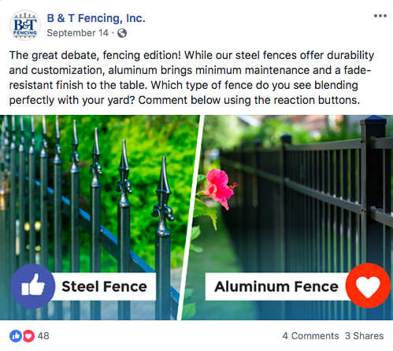

Experience
BowStern Digital Marketing Internship
From May to August 2018, I was a part of the Digital team at BowStern Marketing Communications. One of the things I was tasked with was creating Instagram, Facebook, and Twitter content for clients. The screenshots below are some examples of my work.

Tally Eats Project
For my social media management class (LIS4380), the team I was a part of decided to create a campaign promoting places to eat in Tallahassee. We each chose a social media platform to use, and I decided to take on Instagram. I was responsible for curating content over a couple of weeks, and when we gave our final presentation the account had about 500 followers. The screenshots below are some of the posts I uploaded to the account.